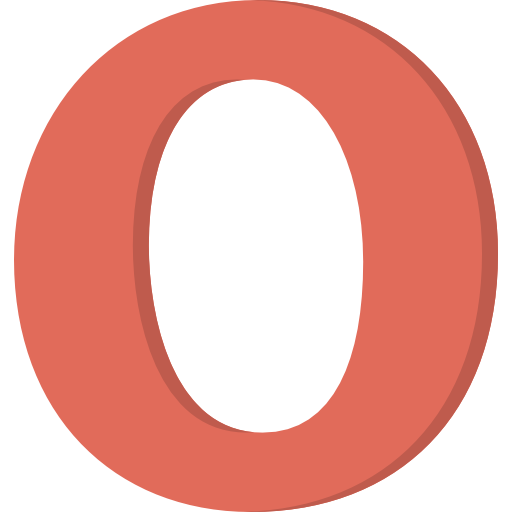
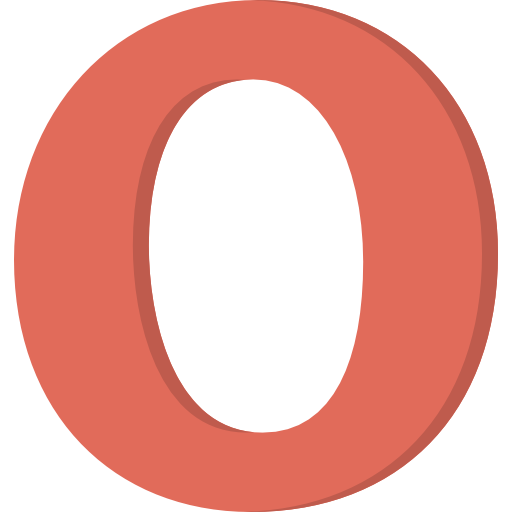

Семантичний елемент чітко описує його значення як для браузера, так і
для розробника.
Приклади не семантичних елементів: div і span- нічого не
говорить про його вміст.
Приклади семантичних елементів: form, table і article - чітко
визначає його зміст.
Підтримка браузерів


 

Семантичні елементи HTML5 підтримуються у всіх сучасних браузерах.
Крім того, ви можете "навчити" старих браузерів, як обробляти
"невідомі елементи".
Нові семантичні елементи в HTML5
HTML5 пропонує нові семантичні елементи для визначення різних частин
веб-сторінки:
HTML5 "section" елемент
Елемент "section" визначає розділ в документі.
Згідно з документацією в3к'с HTML5: "розділ представляє собою
тематичну угруповання контенту, зазвичай з заголовком".
Домашня сторінка зазвичай може бути розділена на розділи для
ознайомлення, змісту і контактної інформації.
HTML5 "article" елемент
Елемент "article" визначає незалежний, автономний вміст.
Стаття повинна мати сенс самостійно, і вона повинна мати можливість
читати його незалежно від іншої частини веб-сайту.
Приклади того, де можна використовувати елемент "article":
- Повідомлення на форумі
- блозі
- Газетна стаття
Елемент "header" задає заголовок для документа або розділу.
Елемент "header" повинен використовуватися в якості контейнера для
вступного змісту.
В одному документі може бути кілька елементів "header".
У наступному прикладі визначається заголовок для статті:
Елемент "footer" вказує нижній колонтитул для документа або розділу.
Нижній колонтитул зазвичай містить автора документа, інформацію про
авторське право, посилання на умови використання, контактні дані і
т.д.
В одному документі може бути кілька елементів "footer".